PORTAFOLIO DE INGENIERÍA ESTRUCTURAL · 2026
Ingeniería que protege la continuidad clínica.
Portafolio técnico de diseño estructural: aislamiento sísmico hospitalario, modelación global y memorias de cálculo en acero, concreto, cimentaciones, plataformas industriales y edificación.
- SAP2000
- SAFE
- ETABS
- ABAQUS FEA
- ACI / AISC
- RNE
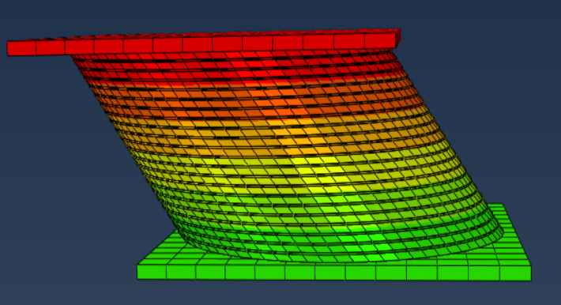
01 · CASO DE ESTUDIO
Del dispositivo al desempeño del hospital.
El estudio conecta la respuesta local del sistema de aislamiento con el comportamiento global del Bloque A y sus consecuencias funcionales.
- Proyecto
- Hospital Tipo II
- Ubicación
- Huancané, Puno, Perú
- Sistema
- Aislamiento de base LRB + POT
- Uso
- Infraestructura esencial
El objetivo no es solo evitar el colapso: es reducir daño, proteger equipamiento y acelerar la recuperación operativa.
-
01
Caracterización
Geometría, materiales, cargas y propiedades mecánicas de aisladores y deslizadores.
-
02
Modelación local
Calibración tridimensional no lineal en ABAQUS frente a ensayos experimentales.
-
03
Respuesta global
Modelo ETABS, análisis modal y siete pares de registros para el ANLTH.
-
04
Resiliencia
Lectura de pérdidas, recuperación y continuidad mediante FEMA P-58, PACT y USRC.
02 · DISEÑO DEL AISLAMIENTO
Un sistema mixto para desacoplar y disipar.
TIPO A
LRB HLR-S 700×286
Núcleo de plomo, caucho natural laminado y placas de confinamiento.
- Carga de servicio
- 2,050 kN
- Desplazamiento calibrado
- ±250 mm
TIPO B
LRB HLR-S 650×270
Segunda familia de aisladores elastoméricos para balancear las demandas en planta.
- Carga media
- 1,400 kN
- Desplazamiento de diseño
- 250 mm
TIPO C
Deslizador POT HSP 2100/580
Interfaz PTFE-acero inoxidable con contacto y fricción dependiente de velocidad.
- Carga de ensayo
- 905 kN
- Amortiguamiento ensayo
- 58.8 %
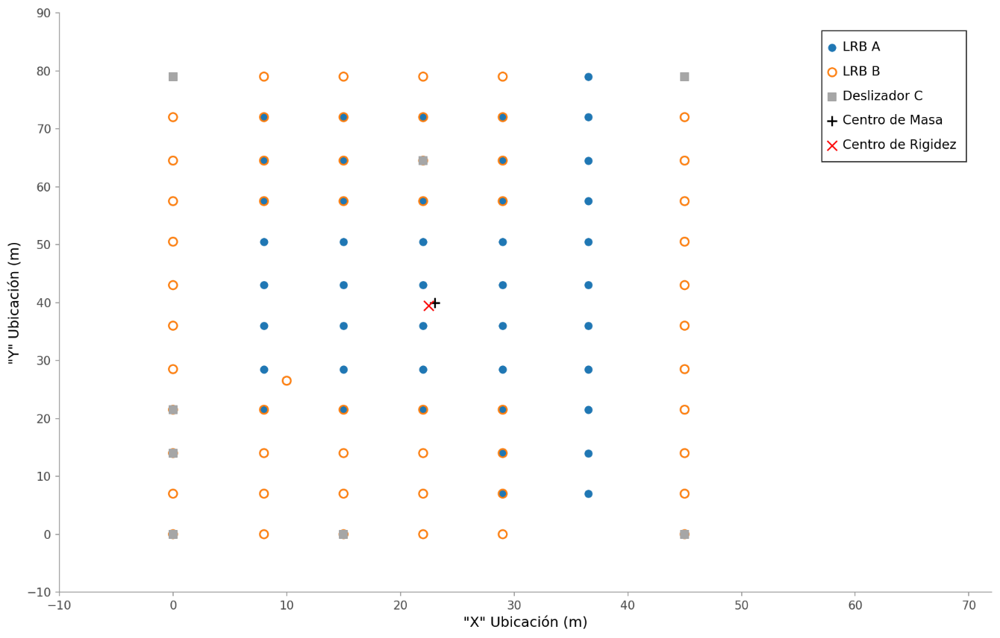
DISTRIBUCIÓN EN PLANTA
85 dispositivos coordinados con la retícula estructural
La ubicación por tipo responde a la demanda axial, la torsión y la compatibilidad de desplazamientos.
03 · MODELACIÓN GLOBAL
ETABS: del modelo modal a la demanda sísmica.
El modelo global incorpora las propiedades de los dispositivos, masa sísmica, excentricidad accidental y combinaciones ortogonales exigidas para el sistema aislado.
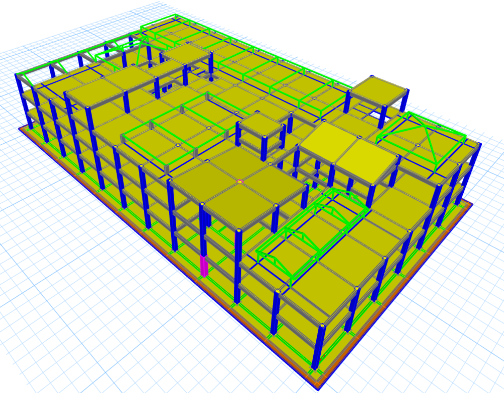
2.671 s
Respuesta dominada por el aislamiento
Los primeros modos presentan periodos de 2.671 s y 2.662 s, con participación predominante en las direcciones X e Y.
| Modo | Periodo | UX | UY |
|---|---|---|---|
| 1 | 2.671 s | 68.20 % | 28.39 % |
| 2 | 2.662 s | 30.27 % | 69.08 % |
| 3 | 2.460 s | 96.19 % torsional | |
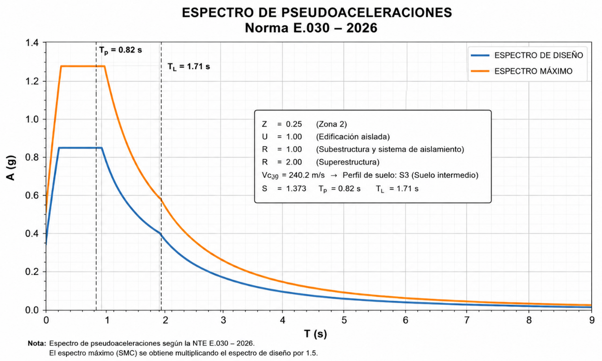
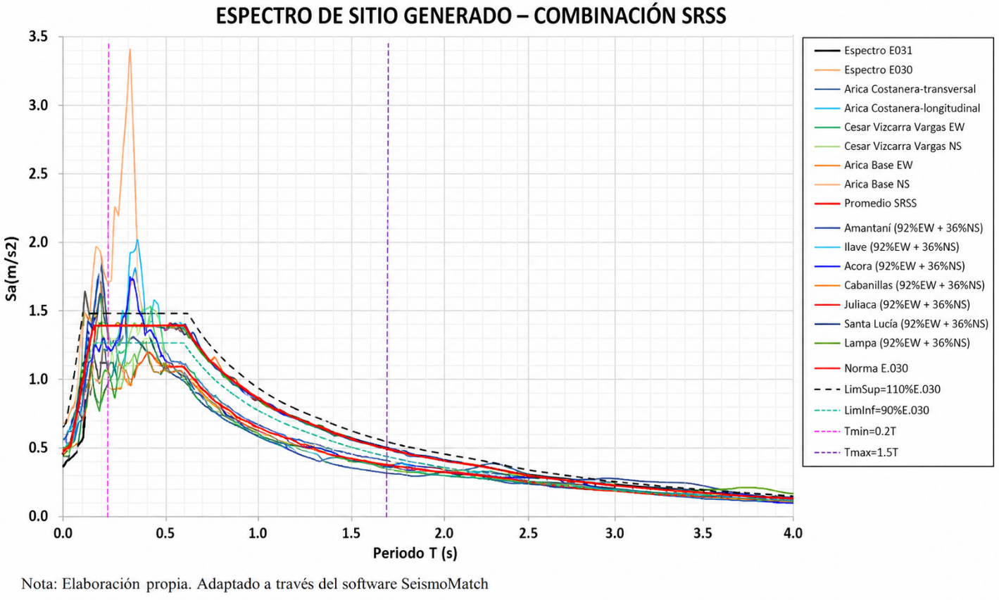
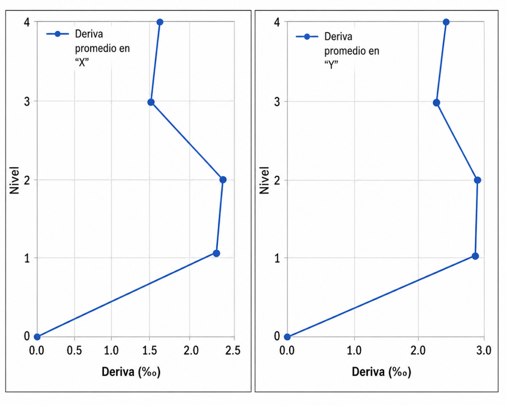
Deriva MCE en X
2.30 ‰
Deriva MCE en Y
2.70 ‰
Aceleración máxima
0.30 g
Registros analizados
7 pares
04 · CALIBRACIÓN ABAQUS
Modelos locales que reproducen el ensayo.
La calibración no lineal verifica que rigidez, fuerza, energía disipada y forma histerética sean consistentes con el comportamiento físico.
CASO A · AISLADOR LRB
Hiperelasticidad, viscoelasticidad y plasticidad.
Caucho con modelo Yeoh y serie de Prony, núcleo de plomo elastoplástico, acero de confinamiento y grandes deformaciones activadas.
- Carga vertical2,050 kN
- Desplazamiento±250 mm
- Rigidez ABAQUS1.091 kN/mm
- Error de rigidez0.31 %
- Energía disipada53,960 kN·mm
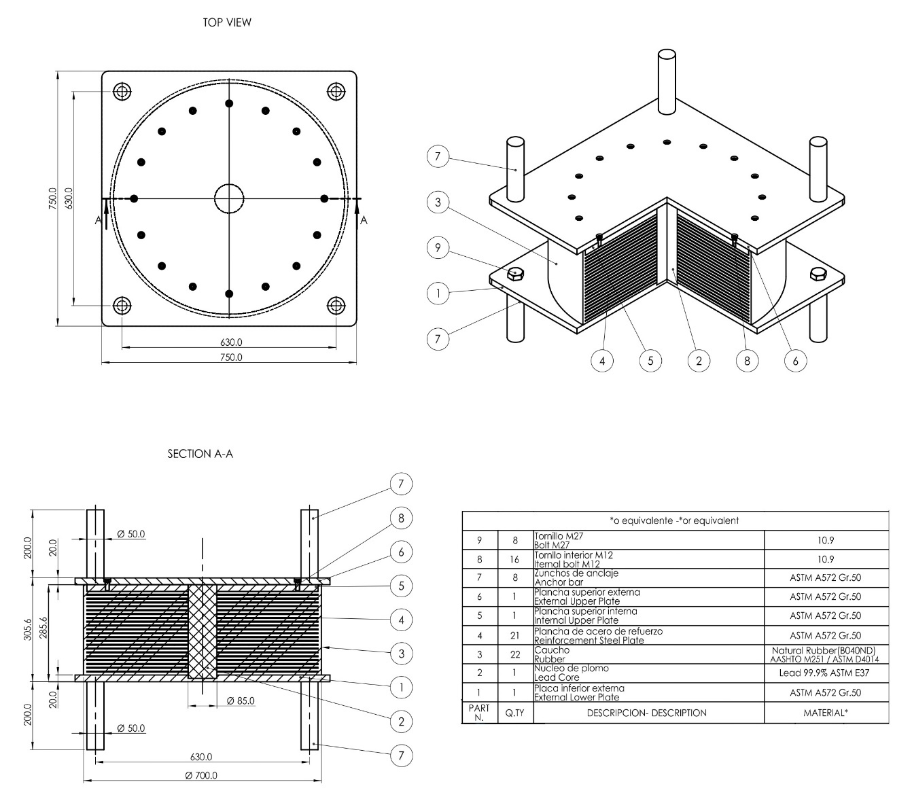
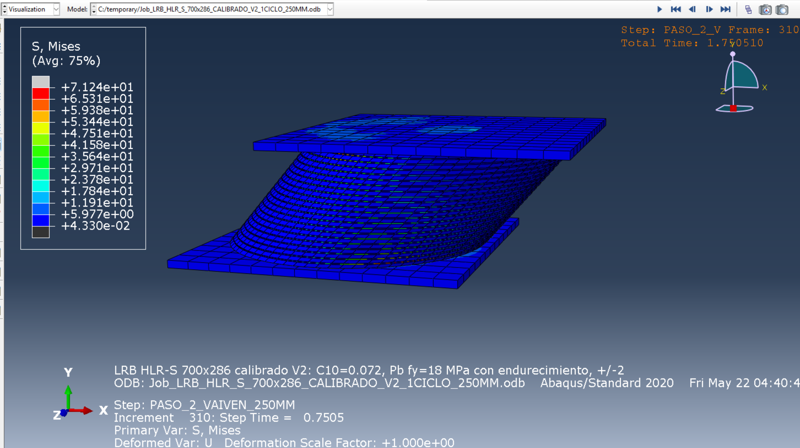
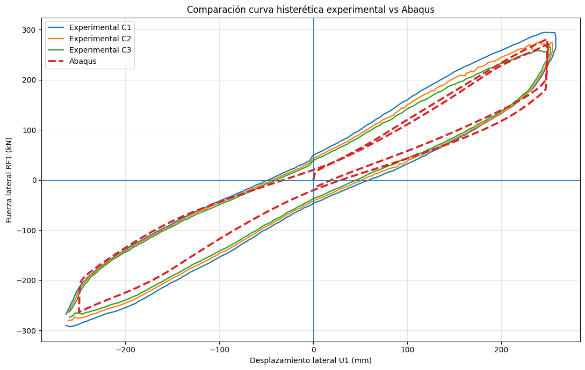
CASO B · DESLIZADOR POT
Contacto PTFE-acero y fricción dependiente de velocidad.
El modelo incorpora hard contact, formulación penalty, transición adherencia-deslizamiento y una ley friccional calibrada.
- Amplitud numérica±194.27 mm
- Fuerza máxima±83.44 kN
- Rigidez numérica0.498 kN/mm
- Rigidez experimental0.501 kN/mm
- Velocidad de ensayo25.4 mm/s
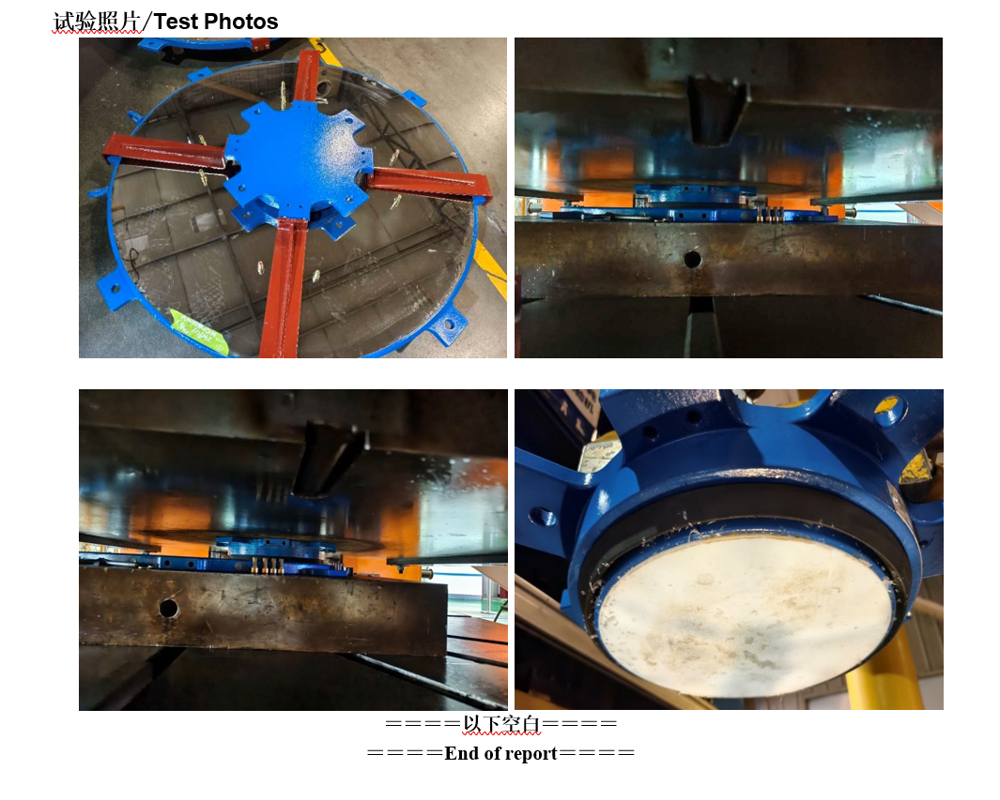
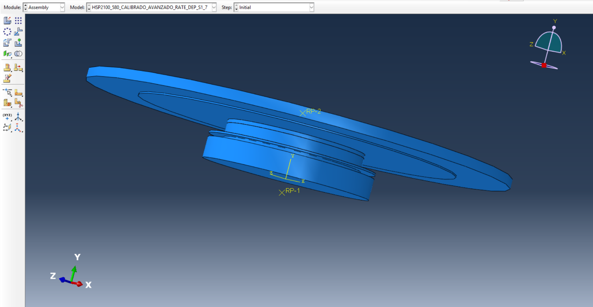
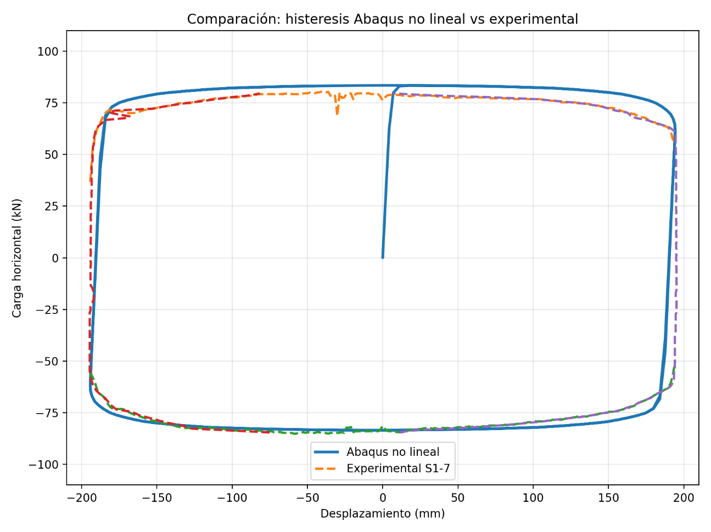
05 · RESULTADOS Y RESILIENCIA
Menor demanda. Menor daño. Recuperación más rápida.
La tesis reporta mejoras sustanciales frente a una configuración convencional de base fija, especialmente en componentes no estructurales y continuidad funcional.
reducción de aceleraciones
Menor demanda sobre cielos rasos, instalaciones y equipamiento médico.
reducción de cortante basal
La deformación se concentra en la interfaz de aislamiento.
pérdida económica estimada
Frente a valores superiores al 20 % para el sistema convencional.
recuperación funcional
La referencia convencional se sitúa entre 60 y 120 días.
SÍNTESIS PROFESIONAL
Una metodología replicable para infraestructura esencial.
Integrar diseño por desempeño, modelación local de dispositivos, análisis global no lineal y evaluación de consecuencias permite tomar decisiones de ingeniería vinculadas directamente con la operatividad post-sismo.
Abrir archivo por capítulosCifras y conclusiones presentadas conforme al documento de tesis del autor.
06 · MEMORIAS DE CÁLCULO
Diseño estructural aplicado a proyectos reales.
Catálogo técnico con 33 memorias independientes, separadas por tipo de estructura y acompañadas por galerías de figuras, modelos, tablas y resultados extraídos de cada documento. Se presenta el alcance de ingeniería sin publicar clientes, firmas, presupuestos, DNI/RUC ni archivos originales.
Concreto armado y cimentaciones
Fundaciones para equipos, tanques, bombas y plataformas.
Desarrollo de modelos tridimensionales, transferencia de cargas de equipos, verificación de presiones admisibles, estabilidad global, punzonamiento, flexión, cortante y pedestales de anclaje.
- Zapatas, losas, pedestales y cajones de concreto armado.
- Chequeo de servicio, resistencia, deslizamiento y volcamiento.
- Cargas de líquidos, equipos, tuberías, mantenimiento y sismo.
Acero estructural
Plataformas, soportes, pasarelas, escaleras y arriostres.
Diseño y verificación de sistemas metálicos para operación industrial, considerando cargas de gravedad, viento, sismo, temperatura, restricciones de servicio y factores de utilización.
- Perfiles, columnas, vigas, arriostres y conexiones.
- Control de derivas, desplazamientos verticales y vibración de servicio.
- Diseño por resistencia con criterios LRFD/ASD.
Edificación e infraestructura
Modelos integrales con análisis sísmico y elementos no estructurales.
Coordinación de modelos ETABS/SAFE para módulos estructurales, diseño de losas, vigas, columnas, muros, cimentaciones y revisión de componentes no estructurales bajo demanda sísmica.
- Análisis modal, cortante basal, derivas y combinaciones normativas.
- Verificación de elementos de concreto armado y acero.
- Compatibilidad entre arquitectura, instalaciones y estructura.
Plataformas de flotación y mantenimiento
Modelos SAP2000 para plataformas de celdas, pasarelas de acceso, barandas, escaleras y soportes auxiliares.
Tanques, bombas y cajones de pulpa
Diseño de fundaciones con cargas de equipos, líquidos, operación, sismo y revisión de presiones de contacto.
Soportes para filtros, zarandas y distribuidores
Verificación de estructuras de soporte, desplazamientos de servicio, combinación de cargas y factores de utilización.
Edificio de preparación y dosificación
Evaluación de fundaciones, muros, plataformas y respuesta ante viento/sismo para operación de reactivos.
Ampliación de infraestructura industrial
Memorias separadas para acero estructural y concreto armado, con lista de verificación de diseño y control de servicio.
Edificación institucional por módulos
Modelación sísmica, diseño de elementos resistentes, cimentaciones y revisión de componentes no estructurales.
Portafolio anonimizado.
Las memorias fuente se usaron solo para extraer experiencia técnica. No se publican documentos originales, códigos internos, clientes, firmas, presupuestos, datos personales ni información contractual.
Abrir las 33 memoriasING. JUAN AMERICO LOPEZ PIZARRO